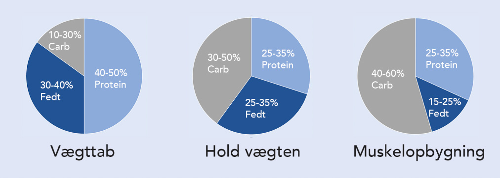

Det er vigtigt at have en basal forståelse omkring hvad du indtager og hvilke påvirkninger det har på din krop. Når du har denne viden, kan du bruge kosten til at hjælpe dig en lang vej med bl.a vægttab og muskelopbygning.
Overordnet er der tre kategorier inde for nær ingsindhold - kulhydrater, protein og fedt. Mængden af disse tre kategorier i relation til hinanden, varierer alt efter om skal tabe dig, bygge muskelmasse eller holde vægten. En tommelfingerregl for dette ses på figuren ovenfor. For at få en næringsfordelig som passer til dig og dine behov - klik her.
Kulhydrater
Alle former for kulhydrat bliver nedbrudt til glukose, som er kroppens primære energikilde. Nedbrydningsprocessen af kulhydrater er dog forskellig og kan opdeles i to kategorier.
Simple kulhydrater
Dette er kulhydrater som er lette for kroppen at nedbryde. De findes bl.a. i sukker, sirup, mælkeprodukter og frugt. Disse kulhydrater giver kroppen et energiboost, men er over længere sigt ikke mættende.
Komplekse kulhydrater
Ved indtagelse af komplekse kulhydrater er nedbrydningsprocessen længere. Her findes madvarer som ris, pasta, brød og kartofler. Disse kulhydrater giver omvendt simple kulhydrater ikke et engergiboost på samme måde, men mætter til gengæld mere og i en længere periode.
Protein
Protein er kroppens byggesten, som hjælper musklerne til at vokse. Eksempler på proteinkilder er følgende, kød, kylling, fisk, æg og ost. Protein består af aminosyre som også her opdeles i to typer.
Ikke-essentielle
Denne type aminosyrer er noget kroppen selv producerer og er derfor ikke essentielle.
Essentielle
Essentielle aminosyrer er derimod noget som vi skal indtage med kosten for at vedligeholde eller opbygge mere muskelmasse.
Fedt
Når man snakker om kost, plejer fedt at være fjenden. Men i realiteten er fedt en vigtig byggesten for den menneskelige krop som bl.a. Hjælper med opbygning af celler samt optagelse af vitaminer.
Fedt er kompakt energikilde, med hele 9 kalorier pr. gram, hvorimod både protein og kulhydrater har 4 kalorier pr. gram. Derfor kan fedt være farligt, hvis man ikke spiser de rigtige mænger og typer.
Fedt opdeles i to hovedgrupper, mættet fedt og umættet fedt:
Mættet fedt
Mættet fedt findes i kødprodukter, mejeriprodukter samtkokos- og palmeolie. Det anbefales at maksimalt 10 energiprocent fra mættet fedt, eftersom for store mængder kan lede til hjerte-kar-sygdomme samt diebetis.
Umættet fedt
Umættet fedt ses som den gode type fedt. I bl.a. nødder, kerner avokado og fisk, findes umættet fedt, som i modsætning til det mættet fedt ikke udvikler hjerte-kar-sygdomme samt diebetis. Desuden vil umættet fedt være med til at sænke kolestoroltallet.
Steg derfor hællere i rapsolie frem for smør og prioriter en lavere fedtprocent i mælk for at undgå for meget mættet fedt.